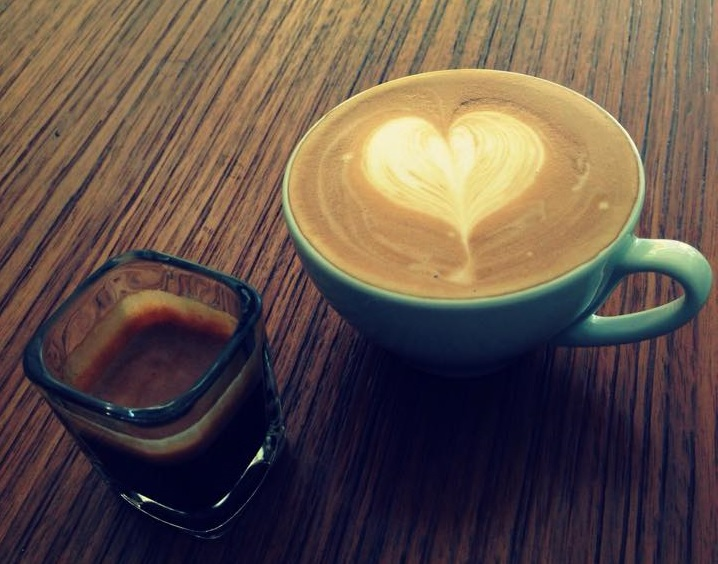

當初會創站的原因,說來話長......我很喜歡坐在一間安靜的咖啡廳裏面,點一杯咖啡,看一本書,放鬆。全神貫注地進入書中的世界,這個時候不需要思考,只是純然的 理解,是我很喜歡的一件事情,一開始是這樣。久了我去過很多咖啡廳,同樣是一杯拿鐵,每一間都能有微妙的不同。無論是機器、 豆子質地、沖泡的技巧、混豆的比例都會影響咖啡豆的風味,看著不同的咖啡廳在店裡不起眼的角落販賣著自家的咖啡豆,我突然想 或許我可以建立一個平台,讓各地的人除了在自家附近的巷子探訪,也能透過網路去發掘其他的,同樣存在於巷弄中,卻不在你家附近的咖啡。 也希望這樣的平台能讓很多追逐夢想開立咖啡廳的人,多一分堅持的力道。
